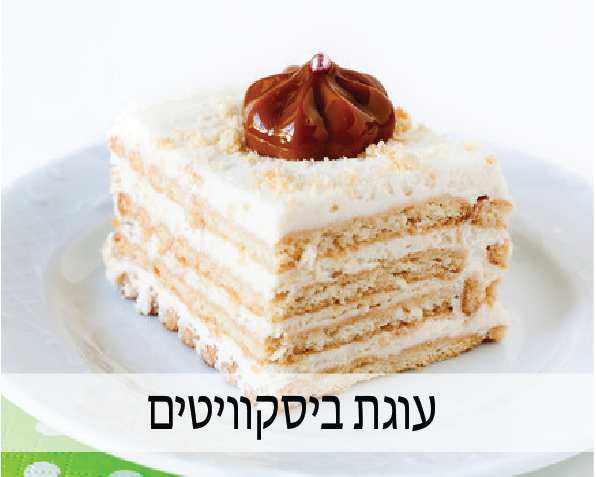
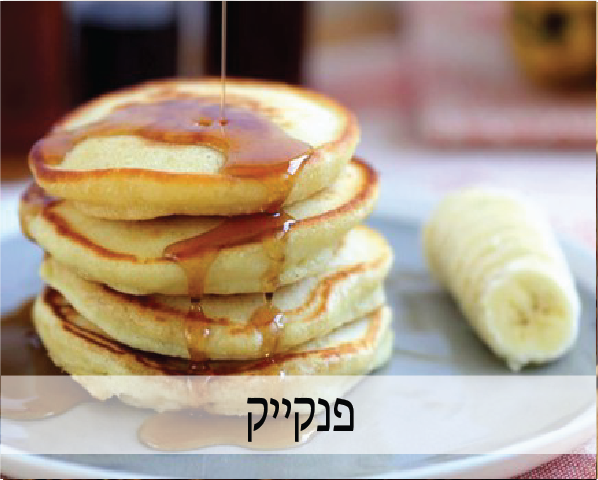
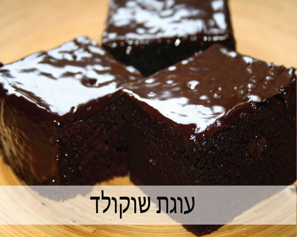
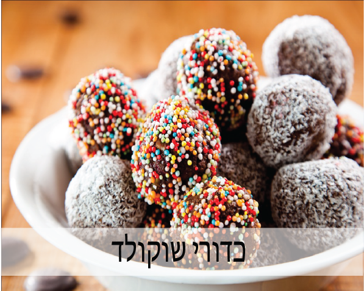
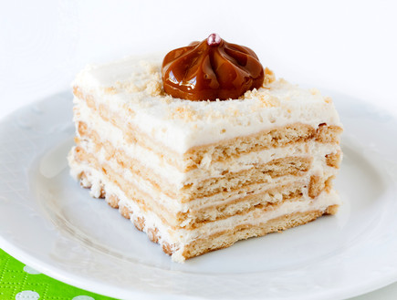
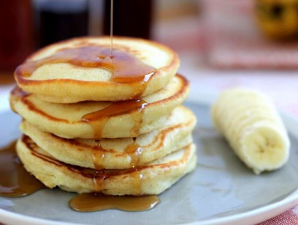
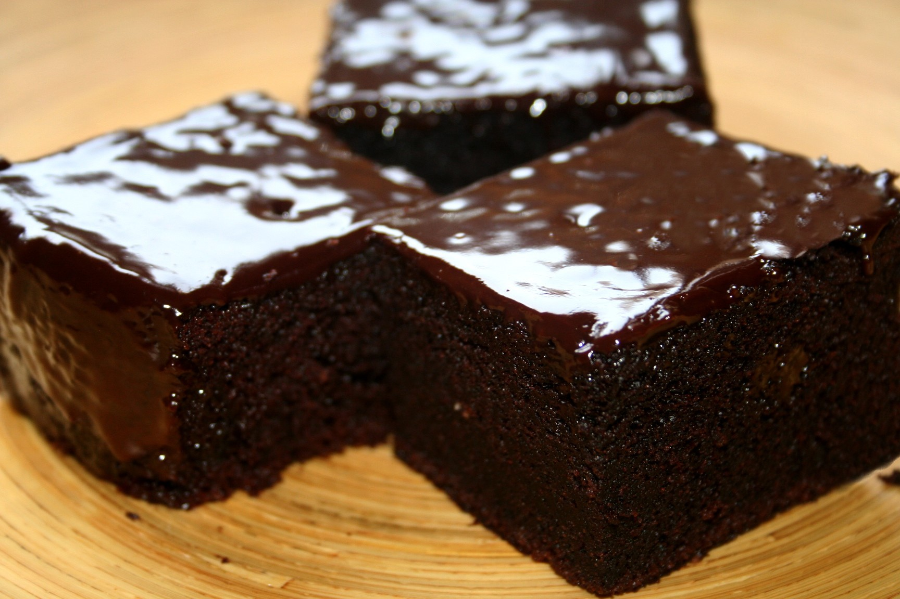
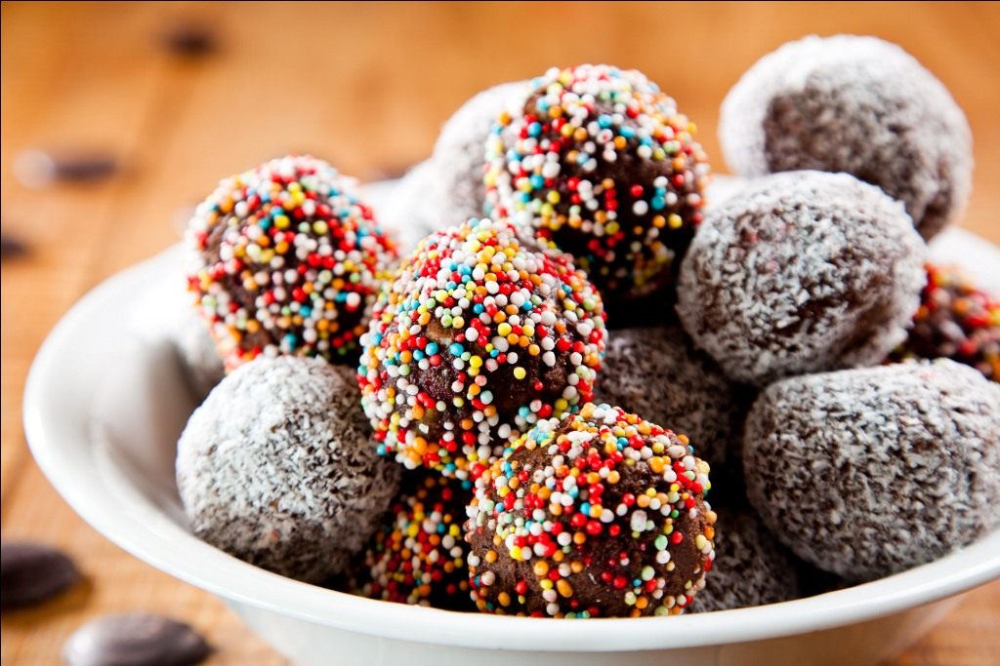

מתכונים
|  |  |
|  |  |
עוגת ביסקוויטים
מצרכים:
- 2 פודינג וניל
- 2 שמנת מתוקה
- 1 כוס חלב
- 4 חבילות ביסקוויטים
אופן הכנה:
- להכנה לוקחים את הפודינג ושמים בקערה. לאותה קערה שופכים גם את השמנת המתוקה וגם את כוס החלב
ומערבבים עם מיקסר עד שנוצרת עיסה אחידה. - שופכים קצת חלב לקערה נפרדת.
- לוקחים ביסקוויט וטובלים בתוך החלב עד שהוא נהיה לח ושמים אותו בתוך התבנית.
- כך שמים שכבה אחת של ביסקוויטים ומעליה מורחים שכבה של קצפת במחזוריות עד סוף התבנית.
- מכניסים למקרר ל 3 וחצי שעות.
פנקייק
מצרכים:
- 2 ביצים
- כוס חלב
- 4 כפות שמן
- 1/4 כפית מלח
- שליש כוס סוכר
- כוס ורבע קמח
- 2 כפיות אבקת אפיה
אופן הכנה:
- להקציף את הביצים, להוסיף באיטיות את החלב והשמן. להוסיף סוכר, מלח ובסוף את הקמח והא. אפיה במינימום ערבוב.
- במחבת חמה, עם מעט שמן אש בינונית לצקת מהבלילה בעזרת מצקת, לטגן עד שמופיעות בועיות על פני הפנקייק,
להפוך בזהירות ולטגן עוד כשתי דקות. - להניח על נייר סופג ולהגיש עם סירופ מייפל, שוקולד, ממרח שוקולד, דבש.
עוגת שוקולד
מצרכים:
- 3 ביצים
- כוס סוכרת כוס שמן וכוס אבקת שוקולית
- 2 כוסות קמח תופח
- 2 שקיות סוכר וניל
- לציפוי השוקולד: 250 מ"ל שמנת מתוקה להקצפה ו200 גרם שוקולד מריר
:אופן הכנה
- מקציפים את החלבונים במיקסר ומוסיפים את הסוכר בהדרגה.
- מוסיפים לקצף שנוצר את שאר החומרים ומערבבים היטב.
- מניחים בתבנית משומנת ואופים בתנור שחומם מראש כ180 מעלות.
- אופן הכנה לציפוי השוקולד- מניחים לחימום במיקרוגל קערה עם השוקולד והשמנת עד שהשוקולד נמס ומערבבים.
- לאחר שהעוגה יוצאת מהתנור מצננים אותה על השיש במשך חצי שעה ושופכים את ציפוי השוקולד על העוגה.
כדורי שוקולד
מצרכים:
- 250 גרם ביסקוויטים בתי בר
- 3/2 כוס חלב
- חצי כוס סוכר וחצי כוס אגוזי לוז מסוכרים
- 4 כפות קקאו וכפית תמצית וניל
- 100 גרם חמאה
- לציפוי: סוכריות צבעוניות/קוקוס
:אופן הכנה
- מרסקים בקערה את הפתי בר לפירורים גסים באמצעות מערוך או פטיש שניצלים.
- מרתיחים בסיר על הגז את החלב, סוכר, קקאו ותמצית הווניל עד שהסוכר נמס.
- מוסיפים את החמאה לסיר ומערבבים הכל היטב.
- שופכים לקערת פירורי הפתי בר, אגוזי הלוז והתערבות השוקולדית שהכנו ומערבבים עד לקבלת עיסה יציבה.
- מקררים את העיסה למשך חצי שעה במקרר.
- בעזרת ידיים מעט רטובות יוצרים כדורי שוקולד קטנים וטובלים בקערת סוכריות צבעוניות/ קוקוס.
- מניחים את כדורי השוקולד במנז'טים.